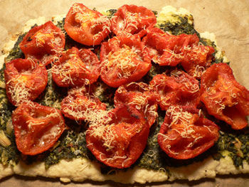

Mark Bittman's plum tomato tart with pesto
My friend Kim had a wonderful New Year’s Eve party last year with a bounty of excellent food. The dish I couldn’t stop eating was a tangy tomato tart with pesto and parmesan cheese on it; I was surprised to learn that it was a Mark Bittman recipe. I’ve been meaning to make it since then, but I never found the time to properly dry out the tomatoes in the oven. This past Sunday, I finally did (as they were drying, I had enough time to go out to brunch, buy an iPhone, and see Ratatouille!). I hope I’ll take the time to do it more often—oven-dried tomatoes are like candy, just as Bittman describes them.

Plum tomato tart with pesto
Mom: you should really make this. It’s right up your alley.
12 plum tomatoes (I only used about 7 tomatoes, but they were big)
6 garlic cloves
1 pie crust
1/2 cup pesto
1 cup grated parmesan
I used tomatoes on the vine, since they were the cheapest thing going at the Manhattan Fruit Exchange. To peel them: remove the core, cut a shallow “X” on the other side, and drop them in boiling water for about 30 seconds. The peel should come right off. Slice them in half through the equator and squeeze out the juice and seeds. Brush a baking sheet with olive oil, and put the tomatoes cut-side down on the sheet. Sprinkle them with salt and a bit more oil, include the garlic, and roast at 200ºF for four to six hours, until they are shriveled.
In the meantime, make a pie crust (I used my standard formula: 1.5 cups flour, 1 teaspoon salt, 7 tablespoons butter, 4 tablespoons water) and refrigerate it. Make a batch of pesto.
Roll out the pie crust to about 1/8 inch and lay it on a parchment-lined baking sheet. Prick it all over with a fork, and bake at 400ºF for close to 20 minutes, until it’s starting to brown. Remove from the oven and set on a rack for a few minutes. Spread the pesto on the crust and top it with the tomatoes. Sprinkle with sea salt and pepper. Add the garlic (he suggests spreading it on the tomatoes; I blended mine in with the pesto), sprinkle on the cheese, and bake for 15 to 20 minutes, until the cheese is melted and the bottom of the crust is well browned.
Comments
It does sound delicious but I would definitely need a cool day if the oven needs to be on for 4-6 hours!
My, you were productive Sunday. That recipe does sound fabulous, but Rebecca’s on the heat factor. Maybe I need a solar oven. And here’s another one of those recipes where the skin is suppose to slide off tomatoes. I’ll admit to having had better luck with Romas than with other fruits and vegs, but I now avoid recipes where the first step is to get rid of tomatoes’ skin and seeds—or say to heck with it and leave the skins and seeds.
ugh, don’t get me started on that iphone.
this does look incredible. i wonder how it would do with puff pastry.
But the oven is on so low that you barely notice. Although it has been San Francisco weather here.
As for peeling tomatoes, if you’re having trouble getting the skins off, you might not be leaving them in the boiling water for long enough. Give them a solid 30 seconds next time; they should really slip off as promised!
This would be delicious with puff pastry!
boy, does that sound good! and my tomatoes are just coming in. and I have some pesto in the refrig that I made and froze last summer. I know what’s for dinner tonite!
Well, we had this divine tart yesterday! What an incredible recipe. Thanks Baby.and really quite simple to make.
Add a comment